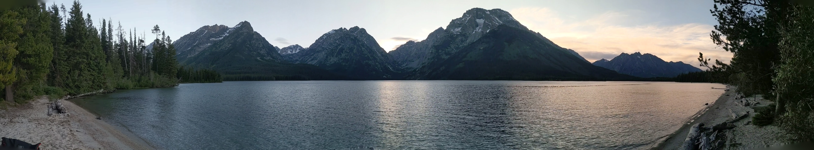

About Me
I am currently studying electrical engineering at Weber State University in Ogden, Utah. Since I was a young lad, I have always loved exploring and learning. I would often travel to the nearest thrift store (Deseret Industries) and browse the electronics section. I would often come across a radio, television, or other analog/digital device and dream of what was inside! After deciding what device, I should purchase I would travel back home and take it A-P-A-R-T! I would often be overcome with excited to remove all the screws and see what is inside (often forgetting the one screw hidden under a conspicuous “WARRANTY VOID IF REMOVED” sticker)! I would always come across the same dilemma. I would never know how such electronic devices worked. Frequently I would follow the copper traces on the underside of printed circuit boards only to reluctantly except the conclusion that I lacked such electrical engineering knowledge to understand how things operated. However, my curiosity and desire to learn would drive me to explore and learn more about all sorts of things let along electronics!
Growing up, I spend time playing lacrosse, learning gymnastics, and pole vaulting. I played lacrosse in Junior High and then after hearing about my High School getting new pole-vaulting pads, I transitions to the High School track and field team. I pole vaulted all throughout high school and even competed collegially for one year. I learned a lot about hard work and dedication when I was apart of the track team. I give all the credit of my success to my coaches who were there all the time ready and eager to help push us as athletes.
My interests in the electrical and computer engineering scheme of things include PCB design, radio frequency, computer vision, digital circuits, and programming. I hope you learn something new from my experiences that I will be sharing.
Remember “Curiosity killed the cat”. But how?